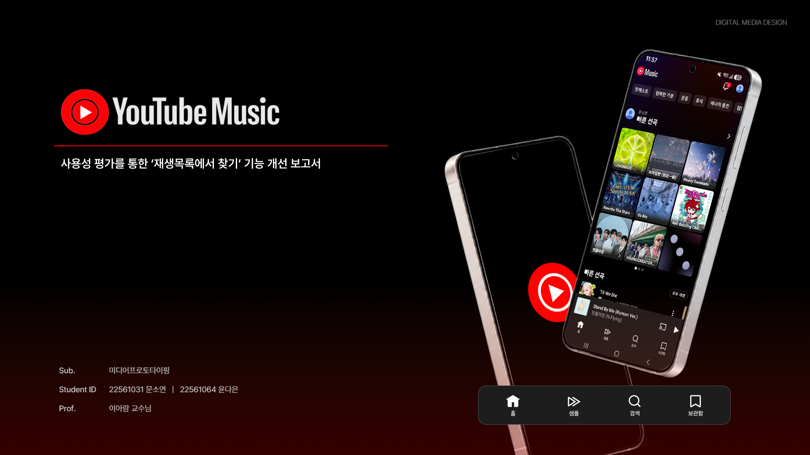

PROJECT
YouTube Music
재생목록 탐색의 불편을 사용자 행동으로 확인하다.
- 진행 기간
- 2026.03 ~ 2026.06
- 팀 인원
- 2명
DELIVERABLES
기획서와 화면설계서
YouTube Music 화면설계서
PROBLEM & APPROACH
문제와 접근
문제 발견
1차 사용성 평가에서는 시선이 재생목록의 곡 리스트에 집중됐고, 사용자는 같은 항목을 반복해서 살폈습니다. 더보기 메뉴에 있던 검색 기능은 잘 발견되지 않았습니다.
개선 방향
재생목록 안에서 검색 기능을 바로 발견할 수 있도록 상단에 표시했습니다. 반복 스크롤 중에는 검색으로 안내하는 스낵바를 제안했습니다.
평가 결과
보고서는 개선 후 평가에서 스크롤 중심 탐색이 검색 기능을 활용하는 방식으로 달라졌다고 기록합니다.
PREVIEW
프로젝트 미리보기
프로젝트 미리보기 1
프로젝트 미리보기 2
프로젝트 미리보기 3
프로젝트 미리보기 4
프로젝트 미리보기 5
프로젝트 미리보기 6
프로젝트 미리보기 7
프로젝트 미리보기 8
프로젝트 미리보기 9
프로젝트 미리보기 10
STORYBOARD
화면설계서 PDF 보기 ↗화면설계서
NEXT PROJECT